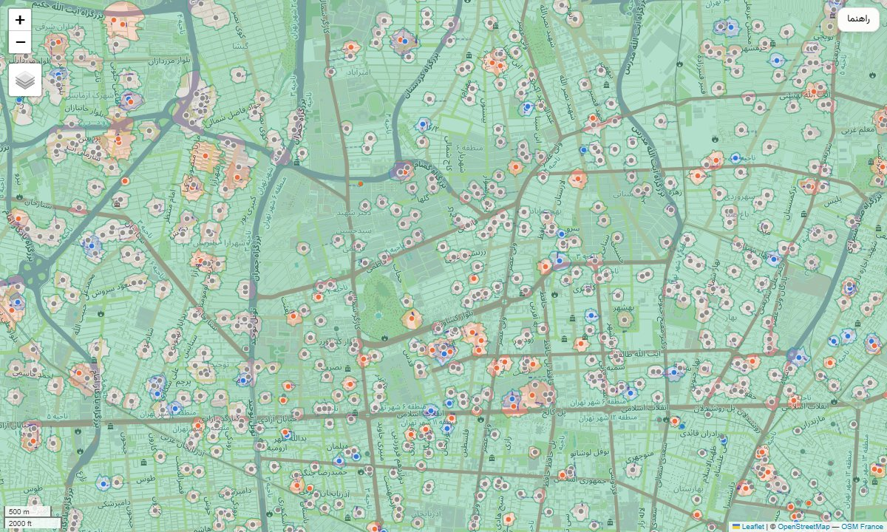
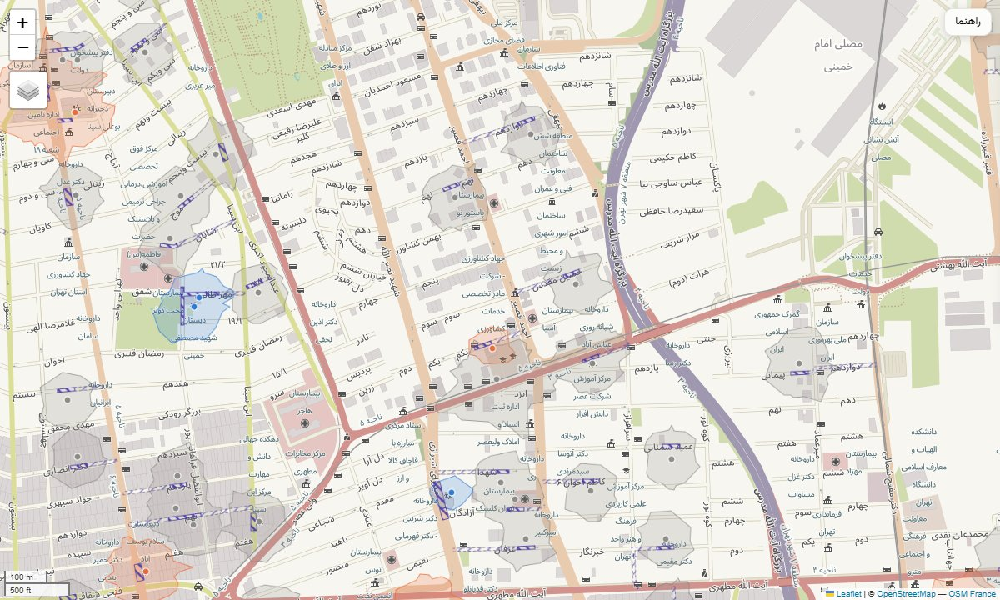

امروز اول مهره و مدرسه ها باز شدن. یه مدت پیش یه نقشه از مدارس تهران درست کرده بودم که دور هر مدرسه یه دایره ۲۰۰ متری کشیده بود. میخواستم ببینم کجاهای شهر تا شعاع ۲۰۰ متری هیچ مدرسهای وجود نداره.
ولی خب ۲۰۰ متر یه عدد ثابت بود برای همه مدرسه ها. گفتم حالا چرا همه مدرسه ها یه اندازه؟ من فکر میکردم صدای بلندگو توی مدرسه های دبستان و دخترونه بیشتره. یه چیز دیگه هم هست. موقع تعطیل شدن مدرسه، اون خیابون یا کوچهای که به مدرسه میرسه همیشه شلوغه. پس اومدم نقشه رو از اول ساختم که این دو تا رو هم نشون بده. این شد یه تپه جدید برای فتح کردن!
مدرسه ها رو از OpenStreetMap برداشتم. اونجا ۲,۱۷۰ مدرسه توی محدوده شهر تهران اسم دارن و از روی اسمشون میشه فهمید دبستانه یا دبیرستان، دخترونهست یا پسرونه. مثلا «دبستان دخترانه شهدای کریمی». آموزشگاه زبان و رانندگی و حوزه علمیه و دانشگاه رو هم کنار گذاشتم چون صبحگاه و زنگ تعطیلی ندارن 🙂
یه لیست دیگه هم از مدرسه ها داشتم که فقط مختصات داره و اسم نداره. ۲,۴۳۴ تا مدرسه ازش اضافه شد که توی OpenStreetMap نبودن. جمعا شد ۴,۶۰۴ مدرسه. پلیس راهور تهران تعداد مدرسه های شهر رو ۴,۴۹۰ تا اعلام کرده، پس عدد بدی نیست.
ساختمون ها جلوی صدا رو میگیرن، پس لازم بود بدونم دور هر مدرسه کجا ساختمون هست. برای همین نقشه ۳۶۶ هزار تا ساختمون تهران رو هم از دیتای Microsoft Building Footprints برداشتم.
اول باید میفهمیدم بلندگوی مدرسه چقدر بلنده. دنبال یه اندازهگیری از صدای بلندگوی صبحگاه گشتم ولی هیچ جا پیدا نکردم. نه توی ایران، نه خارج از ایران!
پس گفتم از اون طرف حساب کنم. بلندگوی صبحگاه برای چیه؟ آفرین! برای اینکه بچه ها تا ته حیاط بشنون چی میگه. سازمان جهانی بهداشت میگه برای اینکه یه جمله کامل فهمیده بشه، صدای حرف باید ۱۵ تا ۱۸ دسیبل از صدای اطراف بلندتر باشه. یه مقاله هم هست که صدای ۹۰ تا مدرسه تهران رو اندازه گرفته و میگه صدای حیاط وقتی کلاس ها برقراره حدود ۶۴ دسیبله. پس ته حیاط باید حدود ۷۹ دسیبل برسه.
اندازه حیاط هر مدرسه رو هم از روی نقشه درآوردم. حیاط بزرگتر یعنی بلندگوی بلندتر. سقفش هم یه بلندگوی شیپوری ۳۰ واتیه که حداکثر ۱۲۷.۸ دسیبل در یک متری میده. نتیجه این شد که بلندگوی یه مدرسه معمولی تو تهران حدود ۱۰۹ دسیبل در یک متری صدا داره.
برای این یه استاندارد هست به اسم ISO 9613-2. به زبون آدمیزاد میگه :
من از هر مدرسه ۷۲ تا خط (هر ۵ درجه یکی) کشیدم و برای هر خط حساب کردم چند متر از مسیرش از وسط ساختمون ها رد میشه. برای همین محدوده ها دیگه دایره نیستن. صدا از سمت خیابونی که جلوی حیاطه دورتر میره و پشت ساختمون ها زودتر خاموش میشه.
L = L1 - 20 * log10(d) - alpha * d + 3 - min(0.1 * metres_inside_buildings, 10)
جایی که صدای بلندگو برسه به صدای خود محله. اینم خوشبختانه دیتاش هست! شرکت کنترل کیفیت هوای تهران صدای کنار ۳۰۸ تا دبستان و مهدکودک رو اندازه گرفته و توی این مقاله میانگین هر منطقه اومده. آرومترین منطقه ۲۲ با ۵۸.۷ دسیبله و شلوغترین منطقه ۱۲ با ۷۵.۴ دسیبل.
نتیجه؟ صدای بلندگوی یه مدرسه معمولی تو تهران تا حدود ۸۴ متر واضح شنیده میشه. ولی این عدد خیلی به محله بستگی داره. تو منطقه ۱۲ حدود ۵۰ متر و تو منطقه ۲۲ حدود ۲۱۴ متر. یعنی یه مدرسه تو منطقه ۲۲ چهار برابر دورتر شنیده میشه، چون محله ساکتتره.
اون سوال اولم هم جواب گرفت. اگر همه مدرسه ها رو با هم حساب کنیم، صدای بلندگو فقط به ۱۶ درصد مساحت شهر میرسه. بقیهش که تو تصویر زیر سبزه، جاییه که صدای هیچ مدرسهای واضح نمیرسه :

البته حد مجاز صدا برای مناطق مسکونی تو ایران ۵۵ دسیبله. اگر این رو ملاک بذاریم، صدای بلندگو ۵۹ درصد شهر رو از حد مجاز رد میکنه. این یکی رو هم تو نقشه با خطچین گذاشتم.
راستش نه! یا حداقل من منبعی پیدا نکردم که اینو بگه. تنها اندازهگیریای که تو تهران پیدا کردم (همون مقاله ۹۰ مدرسه) دقیقا برعکس بود. کلاس های پسرونه حدود ۷ دسیبل پرسروصداتر بودن (۷۵.۷ در برابر ۶۸.۷). فرق دبستان و دبیرستان هم کم بود و ربطی به سن بچه ها نداشت.
البته اون اندازهگیری مال کلاسه نه بلندگو. برای همین این فرض رو کلا وارد حساب نکردم. فرق مدرسه ها تو این نقشه فقط از اندازه حیاط و شلوغی محله میاد که هر دوش اندازهگیری شده.
پلیس راهور تهران همین چند روز پیش گفته «ترددها در مهرماه حدود ۳۰ درصد افزایش پیدا میکند» و مناطق ۳، ۶، ۱۰ و ۱۴ از همه شلوغتره. یه جمله دیگه هم تو همین گزارش هست که خیلی به کار من میومد : «سرویس مدارس بهدرستی اجرا نمیشود و بخشی از بینظمیها، تراکم و ترافیک در جلوی مدارس و محورهای اطراف آنها به همین موضوع بازمیگردد».
حالا جلوی در مدرسه چند متر شلوغ میشه؟ برای این یکی دیتا پیدا نکردم. ولی آییننامه ایمنی راه ها میگه جلوی در مدرسه باید «۱۵ الی ۲۰ متر در هر سمت» توقف ممنوع باشه. خب دقیقا همونجاست که همه وایمیستن که بچهشون رو سوار کنن 🙂 پس برای همه مدرسه ها ۲۰ متر از هر طرف در رو هاشور زدم. برای دبستان و پیشدبستانی، با این فرض که بچه های کوچیکتر رو معمولا یه بزرگتر میاد میبره، ۴۵ متر از هر طرف. این ۴۵ متر هم همون فاصلهایه که همین آییننامه برای تابلوی هشدار تو کوچه ها گذاشته.
اگر مدرسه تو کوچه باشه، کل مسیر از در مدرسه تا اولین خیابون اصلی رو هم هاشور زدم. چرا؟ چون هر ماشینی که میاد دنبال بچه باید از همین کوچه بیاد و برگرده. ۲,۹۱۴ تا از مدرسه ها همچین کوچهای دارن. جمعا ۵۰۲ کیلومتر خیابون و کوچه هاشور خورد!

روی هر مدرسه تو نقشه بزنید، همه عددهاش رو نشون میده. مثلا همون «دبستان دخترانه شهدای کریمی» تو منطقه ۱۵ صدای بلندگوش تا ۶۰ متر میره و کوچهش تا خیابون اصلی ۱۷۵ متره.
نقشه رو از لینک زیر ببینید :
آپدیت پنجشنبه، ۲ مهر ۱۴۰۵ :
گفتم حالا چرا فقط تهران؟ اومدم اطلاعات همه مدرسه های ایران رو از سایت دانشنامه مدارس (schpedia.ir) جمع کردم. جمعا ۱۴۳,۵۹۱ مدرسه!
یه فرق مهم با بخش تهران داره. صدای محله رو فقط برای تهران داشتم، پس اینجا برای همه جا حد مجاز صدا تو مناطق مسکونی (۵۵ دسیبل) رو ملاک گذاشتم. یعنی عددهای این بخش با عددهای بالا قابل مقایسه نیستن.
نتیجه؟ صدای بلندگوی یه مدرسه معمولی تو ایران تا حدود ۴۰ متر واضح شنیده میشه. ولی از سمت خیابونی که جلوی مدرسهست و چیزی جلوش رو نمیگیره، تا حدود ۱۱۴ متر میره. دبستان ها حدود ۳۶ متر، متوسطه ها ۵۰ متر و هنرستان ها ۵۵ متر. چرا؟ چون حیاط دبستان ها کوچیکتره و بلندگوشون هم کمتر لازمه بلند باشه. دخترونه و پسرونه هم باز فرقی نداشتن (۴۲ در برابر ۴۴ متر).
بین استان ها کرمانشاه (۲۴ متر) و آذربایجان غربی (۲۶ متر) کمترین و یزد (۶۹ متر) و بوشهر (۷۲ متر) بیشترین رو داشتن.
یه نکته هم بگم. مدل فرض میکنه ساختمون همسایه کل زمینش رو پر کرده، در حالی که خیلی جاها حیاط داره. پس این عددها احتمالا یه ذره کمتر از واقعیت هستن.
نقشه هر استان جدا رو از لینک زیر ببینید :
nb.neighbours()
| title | date | |
|---|---|---|
| prev | هوش مصنوعی جای regex رو میگیره؟! | ۱۴۰۵/۰۶ |